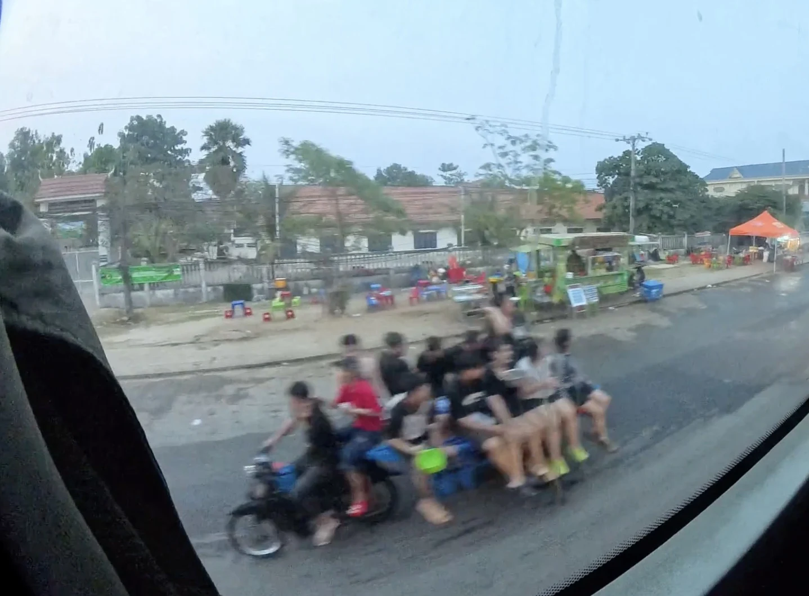
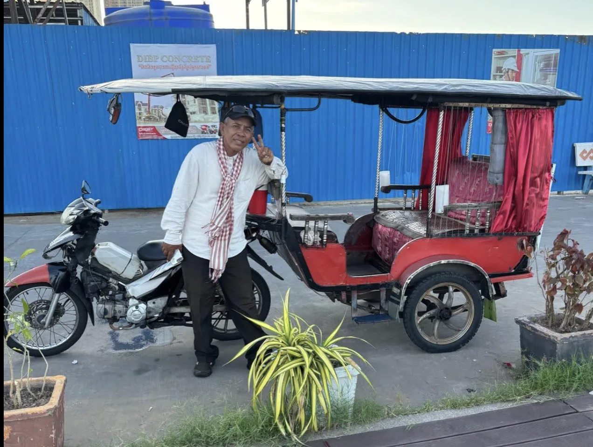
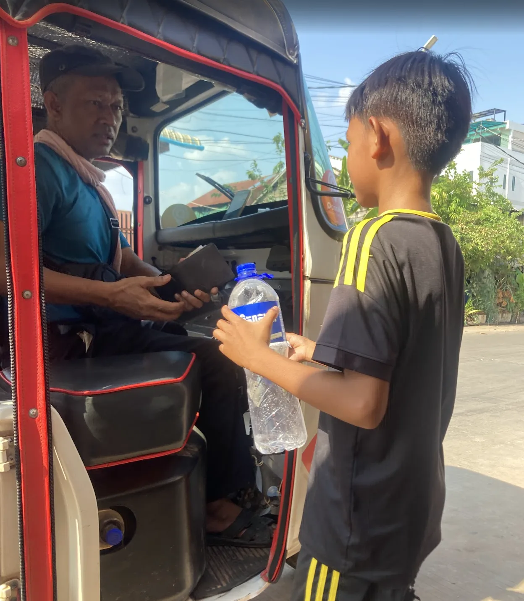

The belief
"A helmet traps heat and damages the scalp. Children's hair and skin are more sensitive. A helmet worn for a short trip still causes lasting follicular damage."
Research & beliefs
Cambodia has near-universal awareness that helmets work — and less than 1% child passenger compliance. This is not ignorance. It is a system of deeply held beliefs, cultural pressures, and practical barriers that a simple donation cannot overcome on its own.
The Cambodian helmet paradox
Research consistently finds that Cambodian riders and parents are aware helmets save lives. Yet real-world compliance — especially for children — remains near zero. The gap between knowledge and action is not stubbornness. It is a system of competing beliefs, each one rational-feeling from the inside.
of all vehicles on Cambodian roads are motorbikes, making motorcycle safety the country's most pressing road issue
lost every day on Cambodian roads — most preventable by certified helmet use among drivers and passengers alike
annual economic cost of road injuries (1.7% of GDP) — a burden concentrated in the country's most economically vulnerable households

The pediatric myth
The most widely reported belief among parents of young children is that helmets are physically harmful — that the weight strains a child's developing cervical spine, or that the EPS foam shell restricts normal skull growth. These fears feel protective. They are medically unfounded.
Clinical evidence shows the opposite: certified child helmets reduce pediatric head injury by 69% and critical spine injury by 42%. The weight is within safe developmental limits. The foam does not restrict growth. Yet because these myths are held by parents who are motivated by love, they are among the hardest to counter without direct, trusted relationships — precisely what the Jim's Helmets school model is designed to build.
Heat and skin fears
Helmet heat is not a comfort complaint — it becomes a dermatological belief. Riders and parents describe "follicular suffocation," claiming that trapped heat deprives hair follicles of oxygen and causes alopecia. Studies across the Mekong region find similar concerns in 50–60% of regular motorcycle users, and the belief persists even when ventilated helmets are available. A helmet that is perceived as harmful for the scalp will stay at home regardless of enforcement.
"A helmet traps heat and damages the scalp. Children's hair and skin are more sensitive. A helmet worn for a short trip still causes lasting follicular damage."
Ventilated helmets maintain adequate airflow for scalp health during typical trip durations. Follicular oxygen deprivation from helmet use is not documented in clinical literature. The risk of scalp injury from asphalt contact vastly exceeds any thermal concern from a ventilated shell.
Shared helmet hygiene
This fear is not a myth — it has a factual basis. Pediculus humanus capitis (head lice) can survive in helmet foam liners for up to 48 hours, making shared helmets a real transmission vector in communities where lice prevalence is already high. For families with children, the anxiety is specific and legitimate.
The response is not to dismiss the fear but to design around it: removable antimicrobial liners, individually assigned helmets at the school level, and hygiene education are all evidence-based responses. Jim's Helmets uses school distribution — one helmet per child, named and stored — to eliminate the shared-helmet concern entirely while creating the daily routine that makes consistent use possible.

Short-trip rationalization
Approximately half of all motorcycle trips in Cambodia cover less than five kilometers. At this distance, the perceived probability of a crash feels negligible — especially on familiar routes ridden daily without incident. Behavioral research calls this temporal risk discounting: the further a harm feels in time or frequency, the more it is discounted. A parent who has made the same school run 500 times without incident experiences that as evidence of safety, not luck. The program addresses this through peer ceremony and social proof, not statistics.


Compliance by transport type
Enforcement in Cambodia has historically focused on motorcycle drivers — not passengers, not children, and not alternative transport modes. The compliance gap between drivers and passengers is where children's lives are lost.
| Transport mode | Driver / daytime | Driver / nighttime | Passenger |
|---|---|---|---|
| Motorcycle | 43–48% | 25–33% | 6.7–8% |
| Motorcycle — child passenger | N/A | N/A | <1% |
| Flatbed truck (agricultural) | 0% | 0% | 0% |
| Tuk-tuk | Near 0% | Near 0% | Near 0% |

Flatbed trucks and the wind-sail myth
Agricultural flatbed trucks — designed to carry produce — carry a significant share of Cambodia's rural workforce. Compliance is effectively zero, anchored by two persistent beliefs.
The first is the "wind-sail effect": workers believe helmets catch wind on moving flatbeds and increase the risk of being thrown. Aerodynamic research shows the opposite — a helmet reduces drag. The second is the "neck-break myth" — that the force of a crash, combined with a helmet's weight, would fracture the cervical spine. Biomechanical evidence contradicts this: helmets absorb and distribute impact energy, reducing spine injury risk rather than creating it. Crowding on truck beds also makes helmet fitting physically difficult, providing a practical barrier that reinforces the beliefs.
Tuk-tuk culture
Tuk-tuk compliance approaches zero — not from indifference, but from a specific belief: that the carriage body provides structural protection equivalent to a helmet in a collision. It does not. The carriage offers no impact absorption for the head, and tuk-tuk occupants remain exposed to ejection and rollover.
A secondary belief is "sensory deprivation" — that wearing a helmet inside a tuk-tuk prevents the driver from detecting road hazards through sound and peripheral vision. This too is contradicted by evidence: sensory attenuation from certified helmets does not measurably increase crash risk in normal traffic conditions.

Myth vs. evidence
The research does not recommend more signage or stronger statistics. It recommends trusted relationships — teachers, parents, peer ambassadors — delivering the correction face to face.
Child-sized certified helmets are within safe developmental weight limits. Helmets reduce pediatric spine injury by 42%, not cause it. Skull growth is unaffected by the external shell.
Ventilated helmets maintain adequate airflow for scalp health during typical trip durations. Follicular oxygen deprivation from helmet use is not documented in clinical literature.
This fear has a factual basis — lice can survive 48 hours in foam liners. The response is individual helmet assignment and removable antimicrobial liners, not avoidance of helmets.
Aerodynamic analysis shows helmets reduce drag. The neck-break myth is contradicted by biomechanical evidence: helmets absorb and distribute crash energy rather than concentrate it on the spine.
Tuk-tuk carriages offer no head impact absorption. Occupants are exposed to ejection. The vehicle structure does not substitute for certified protective gear.
The majority of fatal motorcycle crashes in Cambodia occur on routine short routes. Familiarity with a road reduces perceived risk, not actual risk. Daily routine without incident is survivorship, not evidence of safety.
What the legislation showed
Cambodia's legislative record provides two of the most striking data points in the region's road safety history.
Adult driver compliance after the 2009 law requiring motorcycle helmets — a shift observed within a single month of consistent enforcement
Child passenger helmet use after the 2015–2016 law extended the requirement to passengers — demonstrating that law and enforcement create behavior change at scale
The gap that remains — child compliance now stalled well below adult levels, nighttime enforcement nearly absent, rural areas barely covered — is where Jim's Helmets operates. The legislation created the opening. School-based habit formation keeps children protected when enforcement isn't watching.

The program response
The research conclusion is clear: awareness campaigns alone do not produce durable behavior change. The beliefs documented here — heat fears, pediatric myths, shared hygiene concerns, short-trip rationalization — all persist alongside full awareness of the danger. What changes them is trusted relationships and repeated social reinforcement.
Jim's Helmets builds those relationships through teachers, parent covenants, peer ambassadors, and handover ceremonies that make helmet use visible and expected at the school gate every day. The certified helmet is the beginning of the intervention, not the whole of it.
Research source
The compliance statistics, myth documentation, legislative history, and behavioral analysis are sourced from Socio-Behavioral Dynamics of Road Safety in Cambodia: Investigating the Paradox of Helmet Resistance and Transit Vulnerabilities — a multi-method field study covering observational compliance data, stakeholder interviews across transport modes, and a systematic review of prior WHO and ASEAN road safety literature.